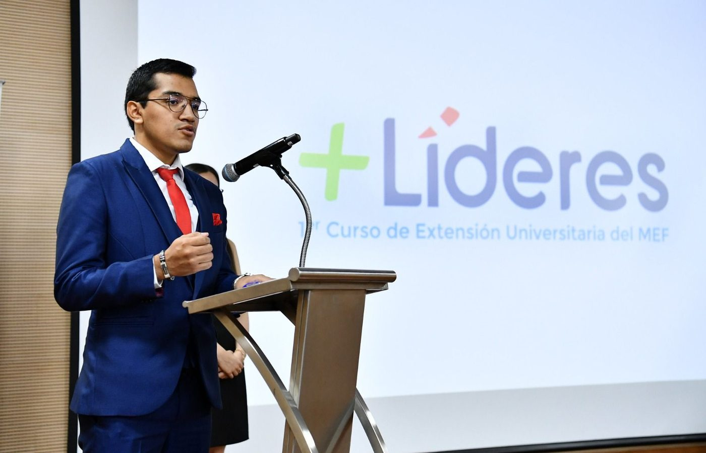
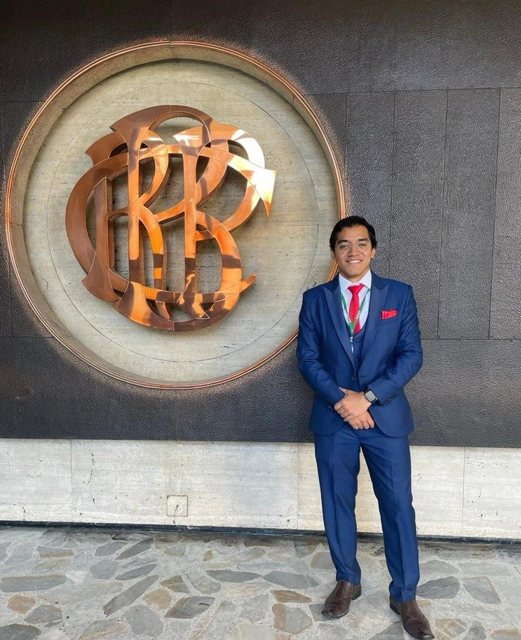
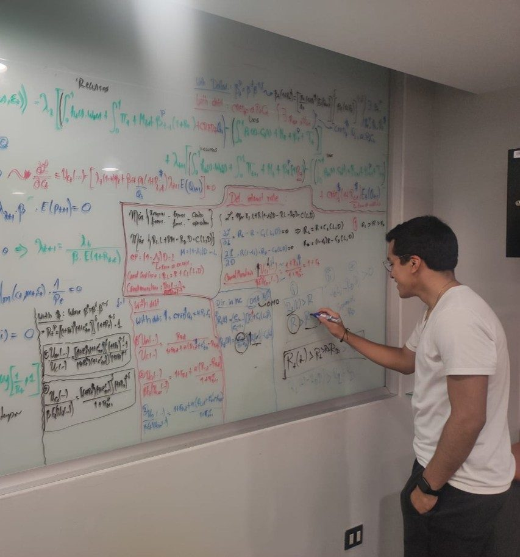
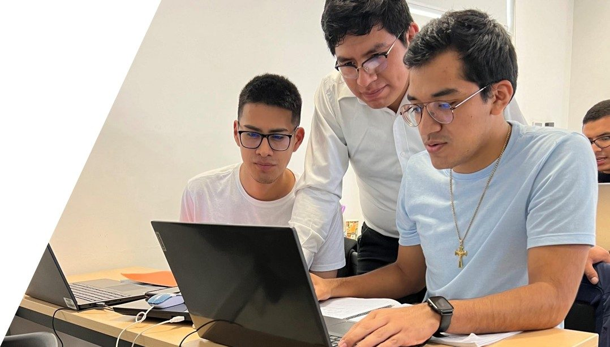

Bachiller en Economía, apasionado por el análisis de políticas públicas basado en evidencia y el uso intensivo de datos, con foco en la mejora de procesos mediante automatización y nuevas tecnologías.

Pero me define mejor...
Apasionado por el análisis de políticas públicas basado en evidencia y el uso intensivo de datos, con un enfoque en la mejora de procesos mediante la automatización y el aprovechamiento de las nuevas tecnologías.
"Creo firmemente que un economista con un perfil técnico, respaldado por un equipo sólido, puede mantenerse firme ante los vaivenes políticos del Perú y aportar soluciones basadas en evidencia para construir un país con mejores condiciones para todos."



"Si he logrado ver más lejos ha sido porque he subido a hombros de gigantes."— I. Newton
"Acts demolish their alternatives, that is the paradox. We can't know what lies at the end of the road not taken."— Mastering 'Metrics
Este tablero ha sido diseñado para proporcionar una visión más detallada y flexible de la información disponible en la Consulta Amigable del Ministerio de Economía y Finanzas (MEF) del Perú. A diferencia de la plataforma original, aquí podrás aplicar múltiples filtros simultáneamente para analizar los datos de manera más eficiente y precisa.
¿Qué encontrarás en este tablero? Información sobre el presupuesto asignado, modificado y ejecutado por distintas entidades del Estado; datos desagregados por nivel de gobierno, sector, pliego, ejecutora, tipo de gasto y función; e indicadores clave de avance y ejecución presupuestal.
¿Cuál es el objetivo? Facilitar el acceso y entendimiento del presupuesto público, con una herramienta más intuitiva para analizar los datos: ágil para investigadores, analistas y cualquier persona interesada en este fascinante tema.
Te invito a explorar los datos y utilizar los filtros disponibles según tus necesidades. ¡Disfrútalo! Si tienes alguna sugerencia, recomendación o iniciativa sobre este tema, no dudes en escribirme. Estaré encantado de seguir explorando más iniciativas.
Ir directo al tablero ↓El Decreto Legislativo N° 1440 regula el Sistema Nacional de Presupuesto Público, uno de los sistemas que integran la Administración Financiera del Sector Público peruano (junto con Tesorería, Endeudamiento y Contabilidad Pública). Fue emitido en 2018 bajo delegación de facultades del Congreso y derogó la Ley N° 28411, vigente desde 2004. Entró en vigor el 1 de enero de 2019.
Su importancia radica en que es la norma que define, para los tres niveles de gobierno (Nacional, Regional, Local) y para los organismos constitucionalmente autónomos, universidades públicas, FONAFE y EsSalud, cómo se programa, formula, aprueba, ejecuta, modifica y evalúa el presupuesto público. Modernizó el sistema anterior incorporando la programación presupuestaria multianual y fortaleciendo el Presupuesto por Resultados (PpR).
Para cualquier ejercicio de seguimiento presupuestal —como el tablero de esta página— el DL 1440 es la referencia normativa base: fija el vocabulario oficial (crédito presupuestario, compromiso, devengado, pago) y los principios que cualquier análisis del gasto público peruano debe respetar.
El Presupuesto del Sector Público está constituido por los créditos presupuestarios que representan el equilibrio entre la previsible evolución de los ingresos y los recursos a asignar conforme a las políticas públicas de gasto, estando prohibido incluir autorizaciones de gasto sin el financiamiento correspondiente.
Preservación de la sostenibilidad y responsabilidad fiscal establecidas en la normatividad vigente durante la programación multianual, formulación, aprobación y ejecución de los presupuestos de las Entidades Públicas.
Toda disposición o acto que implique la realización de gastos debe cuantificar su efecto sobre el Presupuesto, de modo que se sujete en forma estricta al crédito presupuestario autorizado a la Entidad Pública.
Los créditos presupuestarios aprobados para las Entidades Públicas deben destinarse, exclusivamente, a la finalidad para la que hayan sido autorizados en los Presupuestos del Sector Público y sus modificaciones.
El proceso presupuestario se orienta al logro de resultados a favor de la población y de mejora o preservación de las condiciones de su entorno.
El proceso presupuestario se realiza bajo criterios de eficiencia asignativa y técnica, equidad, efectividad, economía, calidad y oportunidad en la prestación de los servicios.
Todos los ingresos y gastos del Sector Público, así como todos los Presupuestos de las Entidades que lo comprenden, se sujetan a la Ley de Presupuesto del Sector Público.
Los ingresos públicos de cada Entidad deben destinarse a financiar el conjunto de gastos presupuestarios previstos en los Presupuestos del Sector Público.
El registro de los ingresos y los gastos se realiza en los Presupuestos por su importe total, salvo las devoluciones de ingresos que se declaren indebidos por la autoridad competente.
El presupuesto y sus modificaciones deben contener información suficiente y adecuada para evaluar la gestión del presupuesto y sus logros.
El Presupuesto del Sector Público tiene vigencia anual, coincidente con el año calendario (Año Fiscal), periodo en el que se afectan los ingresos recaudados y se ejecuta el gasto con cargo a los respectivos créditos presupuestarios.
El Presupuesto tiene una perspectiva multianual orientada al logro de resultados a favor de la población, en concordancia con el Marco Macroeconómico Multianual y el Sistema Nacional de Planeamiento Estratégico (SINAPLAN).
El proceso presupuestario sigue criterios de transparencia en la gestión presupuestal, brindando a la población acceso a los datos del presupuesto conforme a la normatividad vigente.
La Ley de Presupuesto del Sector Público contiene exclusivamente disposiciones de orden presupuestal y con vigencia anual.
Las decisiones en el proceso presupuestario orientadas a la financiación y ejecución de políticas públicas se basan en la mejor evidencia disponible y pertinente.
El Sistema Nacional de Presupuesto Público se regula de manera centralizada en lo técnico-normativo, correspondiendo a las entidades el desarrollo del proceso presupuestario.
Texto oficial del DL 1440 (El Peruano, edición del 16/09/2018). El PIM (Presupuesto Institucional Modificado) y el Girado no son términos que el DL 1440 defina literalmente: el PIM surge de las "Modificaciones Presupuestarias" reguladas en los Arts. 45–51, y el Girado corresponde a las normas del Sistema Nacional de Tesorería (DL 1441).
Avance del gasto público por nivel de gobierno, sector, función, departamento y proyecto de inversión, con filtros interactivos.
Puedo adaptar este mismo tablero a los datos y la identidad de tu gobierno regional, municipalidad o entidad — con mantenimiento incluido — o hacer un análisis a medida sobre tu presupuesto. Escríbeme.